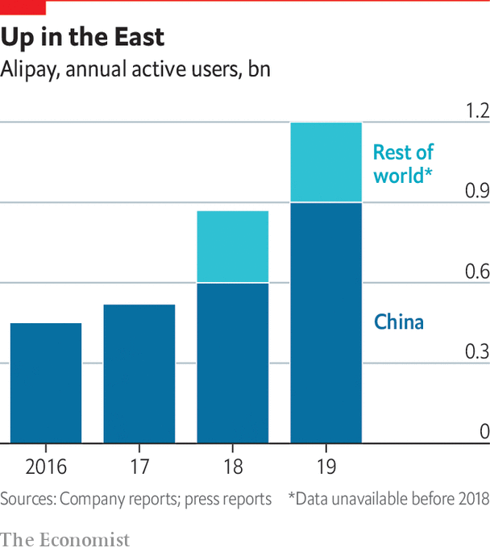
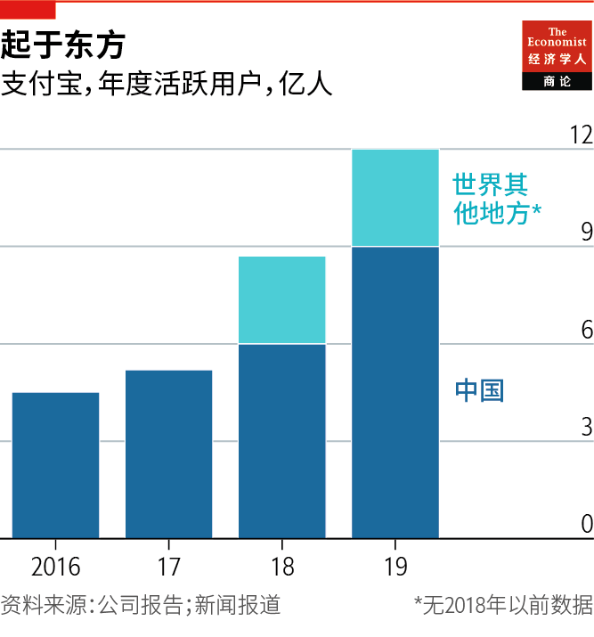

2021-05-23T14:28:54+00:00
Monetary sovereignty
货币主权
貨幣主權
Will the dollar stay dominant?
美元会保持主导地位吗？
美元會保持主導地位嗎？
Digital money may pose a new threat to dollar hegemony
数字货币可能对美元霸权构成新的威胁
數字貨幣可能對美元霸權構成新的威脅
A MILE FROM the White House stands the Capital One Arena, a 20,000-seat stadium for basketball and ice-hockey games. The arena is in the Chinatown district of Washington, surrounded by Chinese restaurants and the “Friendship Archway”, built to celebrate the American and Chinese capitals becoming sister cities in 1984. One afternoon in March, this correspondent arrived at the arena and went to buy a Diet Coke from the Walgreens opposite. Once at the till she tapped on the azure blue Alipay app: up popped a QR code, scanned by the checkout worker to collect payment. The transaction took a second.
在距白宫一英里远的地方矗立着第一资本体育馆（Capital One Arena）。这个可容纳两万名观众的篮球和冰球赛事场馆位于华盛顿的唐人街区，周围中餐馆林立，还有为庆祝1984年中美两国首都缔结友好城市而建的“友谊牌楼”。3月的一个下午，笔者来到体育馆门口，在对面的沃尔格林（Walgreens）药房买了瓶健怡可乐，买单时点开蓝色的支付宝应用，弹出一个二维码，收银员扫码收款。一秒钟就完成了交易。
在距白宮一英里遠的地方矗立着第一資本體育館（Capital One Arena）。這個可容納兩萬名觀眾的籃球和冰球賽事場館位於華盛頓的唐人街區，周圍中餐館林立，還有為慶祝1984年中美兩國首都締結友好城市而建的“友誼牌樓”。3月的一個下午，筆者來到體育館門口，在對面的沃爾格林（Walgreens）藥房買了瓶健怡可樂，買單時點開藍色的支付寶應用，彈出一個二維碼，收銀員掃碼收款。一秒鐘就完成了交易。
Had it been possible to enter the stadium it would have been just as easy to use Alipay, the payment platform started by Alibaba, to buy tickets or snacks. Nor is the Walgreens in Chinatown unique in accepting the app. Around 7,000 of them across America take it, as do shopping centres like Pier 39, in San Francisco, and several Chinese restaurants in New York and Boston.
要是那天可以进入体育馆的话，同样可以用阿里巴巴创建的这个支付平台轻松购买门票或小吃。唐人街的这家沃尔格林也不是唯一接受支付宝付款的门店。全美大约有7000家沃尔格林可以使用支付宝，旧金山的39号码头（Pier 39）等购物中心以及纽约和波士顿的几家中餐馆也可以。
要是那天可以進入體育館的話，同樣可以用阿里巴巴創建的這個支付平台輕鬆購買門票或小吃。唐人街的這家沃爾格林也不是唯一接受支付寶付款的門店。全美大約有7000家沃爾格林可以使用支付寶，舊金山的39號碼頭（Pier 39）等購物中心以及紐約和波士頓的幾家中餐館也可以。
These merchants want to make shopping easier for Chinese tourists, not to persuade Americans to use Alipay. The payment app is not easy for English-speakers (even in “English” mode most of the interface is in Chinese characters, so non-natives need screenshots reliant on Google translate). But its growing acceptance outside China, where Alipay and its rival WeChat Pay process 90% of mobile transactions, augurs a shift in financial power.
这些商家用支付宝是希望方便中国游客购物，而不是想说服美国人使用支付宝。对讲英语的人来说，支付宝并不简单好用（即使是在它的“英语”界面上，大部分内容也还是中文，因此不懂中文的人需要依赖谷歌翻译的拍照翻译功能）。但支付宝在中国以外的地区接受度日益增长（在中国国内，它和竞争对手微信支付处理了九成移动支付），预示着金融实力将发生转移。
這些商家用支付寶是希望方便中國遊客購物，而不是想說服美國人使用支付寶。對講英語的人來說，支付寶並不簡單好用（即使是在它的“英語”界面上，大部分內容也還是中文，因此不懂中文的人需要依賴谷歌翻譯的拍照翻譯功能）。但支付寶在中國以外的地區接受度日益增長（在中國國內，它和競爭對手微信支付處理了九成移動支付），預示着金融實力將發生轉移。
The dollar is pervasive because everyone uses it as their “unit of account”. Oil is invoiced in dollars. Most global trade is paid for in dollars. Most cross-border financial contracts are in dollars. Global travellers keep $100 bills in their socks. Financial markets and trade have grown faster than the global economy for decades, making the dollar ever more dominant. This gives America a clout it exploits through its use of sanctions, as well as unrivalled insight into global finance.
美元之所以大行其道，是因为所有人都把它用作自己的“记账单位”。石油以美元计价。大多数全球贸易都以美元支付。大多数跨境金融合约也以美元结算。在世界各地行走的旅行者总会在袜子里塞点百元美钞。几十年来，金融市场和贸易的增长一直快过全球经济，让美元的主导地位愈发突显。这给美国带来了影响力——可以通过实施制裁来施展，也令它拥有了对全球金融无与伦比的洞察力。
美元之所以大行其道，是因為所有人都把它用作自己的“記賬單位”。石油以美元計價。大多數全球貿易都以美元支付。大多數跨境金融合約也以美元結算。在世界各地行走的旅行者總會在襪子里塞點百元美鈔。幾十年來，金融市場和貿易的增長一直快過全球經濟，讓美元的主導地位愈發突顯。這給美國帶來了影響力——可以通過實施制裁來施展，也令它擁有了對全球金融無與倫比的洞察力。
It is hard to see all this giving way to the yuan. But the way a transition could start, says Jean-Pierre Landau, formerly at the Banque de France, is with tourists. “If you have hundreds of millions of tourists moving around South-East Asia, asking to use their Alipay and attracting more attention to the app then, perhaps, progressively, they might want to denominate transactions in yuan.” First knick-knacks and museum tickets are sold in yuan. Then businesses start invoicing trade in the Chinese currency. Eventually they write financial contracts in it.
很难想象所有这些都会让位给人民币。但游客有可能推动这种转变发生，曾在法国央行任职的让-皮埃尔·兰道（Jean-Pierre Landau）表示。“如果有上亿游客在东南亚各地旅行，要求使用支付宝，这个应用就会得到更多关注，也许一来二去，他们可能就会想用人民币计价交易。”先是小物品和博物馆门票以人民币出售。然后企业开始用人民币开出贸易账单。最终，金融合约也会用人民币计价。
很難想象所有這些都會讓位給人民幣。但遊客有可能推動這種轉變發生，曾在法國央行任職的讓-皮埃爾·蘭道（Jean-Pierre Landau）表示。“如果有上億遊客在東南亞各地旅行，要求使用支付寶，這個應用就會得到更多關注，也許一來二去，他們可能就會想用人民幣計價交易。”先是小物品和博物館門票以人民幣出售。然後企業開始用人民幣開出貿易賬單。最終，金融合約也會用人民幣計價。
Digital money could thus threaten dollar hegemony. But the motive of many places, including China, for issuing their own digital currencies are mainly defensive. China is resisting the disappearance of public money as cash falls out of use. It is also fighting the concentration of power in the hands of data-savvy tech firms. Perhaps digital money will be used to promote a currency, says Mr Landau, but it can also be a defence against competition from a digital dollar.
如此，数字货币就可能威胁到美元霸权。但包括中国在内的许多国家发行自己的数字货币主要是出于防御。随着现金用得越来越少，中国正在阻止国家货币的消失。它也在极力防止支配力集中到精通数据的科技公司手中。数字货币也许将被用来提升一种货币的地位，兰道说，但也可以用来抵御数字美元的竞争。
如此，數字貨幣就可能威脅到美元霸權。但包括中國在內的許多國家發行自己的數字貨幣主要是出於防禦。隨着現金用得越來越少，中國正在阻止國家貨幣的消失。它也在極力防止支配力集中到精通數據的科技公司手中。數字貨幣也許將被用來提升一種貨幣的地位，蘭道說，但也可以用來抵禦數字美元的競爭。
A first reason to create a digital currency is “to protect or safeguard our monetary sovereignty,” said Mu Changchun, the Chinese central bank’s digital-currency boss, in March. He thinks most central banks are keen because they fear a digital dollar. “Digital currency supplied by one central bank should not impede another central bank’s ability to carry out its mandate for monetary and financial stability,” he said.
创建数字货币的第一个原因是为了“保护或捍卫我们的货币主权”，中国人民银行负责数字货币研发的穆长春在3月表示。他认为大多数央行对数字货币都很积极，因为它们对数字美元心存忧虑。“一家央行提供的数字货币不应妨碍其他央行履行其货币和金融稳定职责的能力。”他说。
創建數字貨幣的第一個原因是為了“保護或捍衛我們的貨幣主權”，中國人民銀行負責數字貨幣研發的穆長春在3月表示。他認為大多數央行對數字貨幣都很積極，因為它們對數字美元心存憂慮。“一家央行提供的數字貨幣不應妨礙其他央行履行其貨幣和金融穩定職責的能力。”他說。
Indeed, if internationalisation were their goal, it is difficult to see how China’s tighter restrictions on Tencent and Ant would help to reach it. Since 2018 they have had to clear all mobile payments through a central clearing party, in effect overseen by regulators. The government has also demanded that they hand over data on their customers’ transactions and borrowing. “You have to think twice before allowing a payments network with its headquarters in China, where privacy laws are different,” comments Mr Landau.
事实上，如果中国是以国际化为目标，很难看出加强对腾讯和蚂蚁集团的限制对实现这一目标有何帮助。自2018年起，这两家公司必须通过一个中央清算方来清算所有移动支付，实际上就是将它们置于监管机构的监督之下。政府还要求它们交出客户的交易和借款数据。“在开通使用一个总部在中国的支付网络之前，你得三思，那里的隐私法规可是不一样的。”兰道评论说。
事實上，如果中國是以國際化為目標，很難看出加強對騰訊和螞蟻集團的限制對實現這一目標有何幫助。自2018年起，這兩家公司必須通過一個中央清算方來清算所有移動支付，實際上就是將它們置於監管機構的監督之下。政府還要求它們交出客戶的交易和借款數據。“在開通使用一個總部在中國的支付網絡之前，你得三思，那裡的隱私法規可是不一樣的。”蘭道評論說。
“There are two possible rationales for the government to intervene in this way,” says Markus Brunnermeier of Princeton. “The first is that big tech firms should not monopolise the data, and one way to do that is to have them give it to the government...the second is surveillance by the government.” Another is to maintain capital controls. A third of economists polled by Mr Brunnermeier think capital controls are an insuperable obstacle to internationalisation of the yuan. Yet it is clear that the Chinese authorities are desperate to keep them, even at the expense of the currency’s international role.
“政府以这种方式做出干预，可能有两种依据，”普林斯顿大学的马库斯·布鲁纳迈尔（Markus Brunnermeier）说，“首先是大型科技公司不应该垄断数据，要避免这一点，一种方法就是要它们把数据交给政府……第二种方法是政府监控。”另一个是维持资本管制。布鲁纳迈尔访问的经济学家中，有三分之一认为资本管制是人民币国际化一个不可逾越的障碍。然而，中国政府显然还是竭力要保持这些管制，即使这会影响人民币的国际地位。
“政府以這種方式做出干預，可能有兩種依據，”普林斯頓大學的馬庫斯·布魯納邁爾（Markus Brunnermeier）說，“首先是大型科技公司不應該壟斷數據，要避免這一點，一種方法就是要它們把數據交給政府……第二種方法是政府監控。”另一個是維持資本管制。布魯納邁爾訪問的經濟學家中，有三分之一認為資本管制是人民幣國際化一個不可逾越的障礙。然而，中國政府顯然還是竭力要保持這些管制，即使這會影響人民幣的國際地位。
A bigger risk is what happens when other currencies go digital. Had Diem, the idea proposed by Facebook, been operating when Turkey’s president sacked the head of its central bank in March, it would have been easy for millions of Turks to move their money into dollars or euros. It might also have been possible for businesses to start showing QR codes to accept dollars.
一个更大的风险是其他货币数字化后会发生什么。如果今年3月土耳其总统解雇其央行行长时，Facebook提出的Diem已经在运行，那么千百万土耳其人就能很容易地把资金转为美元或欧元。企业也可能可以开始提供二维码接受美元。
一個更大的風險是其他貨幣數字化後會發生什麼。如果今年3月土耳其總統解僱其央行行長時，Facebook提出的Diem已經在運行，那麼千百萬土耳其人就能很容易地把資金轉為美元或歐元。企業也可能可以開始提供二維碼接受美元。
“It feels very significant that the countries which, apart from China, are most advanced, most active and most interested in CBDCs are the medium-sized emerging economies,” says Mr Landau. “They are too big to accept the loss of monetary autonomy, and sufficiently small to be exposed to the risk of foreign-currency competition.” They may feel they have no choice.■
“除中国外，在央行数字货币上走得最远、表现最活跃、兴趣最浓的国家是中型新兴经济体，这一点让人感觉意义重大，”兰道说，“它们不是小国家，接受不了丧失货币自主权，同时又不够大，要承受外国货币竞争的风险。”它们可能觉得自己别无选择。
“除中國外，在央行數字貨幣上走得最遠、表現最活躍、興趣最濃的國家是中型新興經濟體，這一點讓人感覺意義重大，”蘭道說，“它們不是小國家，接受不了喪失貨幣自主權，同時又不夠大，要承受外國貨幣競爭的風險。”它們可能覺得自己別無選擇。